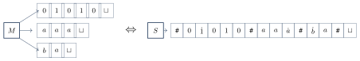

گونههای ماشین تورینگ
تعریفهای دیگری هم برای ماشین تورینگ وجود دارد: ماشین با چند نوار، ماشین غیرقطعی، ماشینی که میتواند سر جایش بماند و غیره. نکته جالب این است که همه این گونهها قدرت یکسانی دارند؛ یعنی دقیقاً همان زبانها را تشخیص میدهند. به این ویژگی استحکام (robustness) مدل میگوییم: ماشین تورینگ در برابر تغییرات معقول در تعریف، بهطور شگفتانگیزی پایدار است.
۱۷.۱همارزی و ماشین با حرکت «ماندن»#
دو مدل را همارز میگوییم اگر دقیقاً یک دسته زبان را تشخیص دهند. کلید اثبات همارزی گونههای ماشین تورینگ این است:
نکته. برای نشان دادن همارزی دو مدل، کافی است نشان دهیم هر کدام میتواند دیگری را شبیهسازی کند.
مثال ۱۷.۱ (حرکت «ماندن»). فرض کنید به ماشین تورینگ اجازه دهیم هد را حرکت ندهد:
این گونه قدرت بیشتری ندارد. هر گذار (stay put) را میتوان با دو گذار جایگزین کرد: یک حرکت به راست به یک حالت جدید و سپس یک حرکت به چپ بدون تغییر نماد:
(گذار دوم برای هر نماد تعریف میشود.) برعکس، ماشین معمولی حالت خاصی از این گونه است.
۱۷.۲ماشین تورینگ چندنواره#
ماشین تورینگ چندنواره چند نوار دارد که هر کدام هد خواندن و نوشتن مستقل خودش را دارد. در ابتدا ورودی روی نوار ۱ است و بقیه نوارها خالیاند. تابع گذار برای ماشین -نواره:
یعنی اگر در حالت هدهای ۱ تا نمادهای تا را بخوانند، ماشین به میرود، تا را روی نوارها مینویسد و هر هد را طبق تا حرکت میدهد.
هر ماشین تورینگ چندنواره یک ماشین تورینگ تکنواره همارز دارد.
ایده اثبات. ماشین -نواره را با ماشین تکنواره شبیهسازی میکنیم. محتوای نوار را پشت سر هم روی یک نوار مینویسد و آنها را با نماد از هم جدا میکند. برای اینکه بداند هد هر نوار کجاست، روی نماد زیر هر هد یک نقطه میگذارد (برای هر نماد نسخه نقطهدار را به الفبای نوار اضافه میکند). اینها هدهای مجازی هستند.

اثبات. فرض کنید یک ماشین -نواره باشد. ماشین تکنواره روی ورودی این کارها را انجام میدهد:
نوار را طوری آماده کن که هر نوار را نشان دهد:
- برای شبیهسازی یک حرکت ، نوار را از اولین (انتهای چپ) تا امین (انتهای راست) طی کن تا نمادهای زیر هدهای مجازی را بفهمی. (این نمادها را در حالت ماشین به خاطر میسپاری؛ تعدادشان متناهی است.)
- یک بار دیگر نوار را طی کن و هر نوار مجازی را طبق تابع گذار بهروز کن: نماد زیر هد را عوض کن و نقطه را به خانه کناری منتقل کن.
- اگر هد مجازیای روی یک رفت (یعنی هد آن نوار را به بخش خالی و قبلاً ندیدهشده نوار برده)، یک در آن خانه بنویس و همه محتوای بعد از آن را یک خانه به راست جابهجا کن. سپس شبیهسازی را ادامه بده.
- اگر به حالت پذیرش یا رد رفت، هم همان کار را بکند.
در هر لحظه کل وضعیت (حالت، محتوای همه نوارها و مکان همه هدها) را نگه میدارد و هر حرکت را با چند حرکت شبیهسازی میکند. پس دقیقاً همان رشتههایی را میپذیرد (و رد میکند) که میپذیرد (و رد میکند)، و روی هر ورودی متوقف میشود اگر و تنها اگر متوقف شود.
یک زبان تورینگ-تشخیصپذیر است اگر و تنها اگر یک ماشین تورینگ چندنواره آن را تشخیص دهد.
اثبات. ماشین تکنواره حالت خاص ماشین چندنواره است (با ). جهت دیگر همان قضیه ۱۷.۲ است.
۱۷.۳ماشین تورینگ غیرقطعی#
در ماشین تورینگ غیرقطعی (NTM) در هر لحظه ممکن است چند حرکت ممکن باشد:
محاسبه یک NTM یک درخت است که هر شاخهاش یکی از امکانها را دنبال میکند. اگر دستکم یک شاخه به حالت پذیرش برسد، ورودی پذیرفته میشود.
هر ماشین تورینگ غیرقطعی یک ماشین تورینگ قطعی همارز دارد.
ایده اثبات. ماشین قطعی همه شاخههای محاسبه NTM را امتحان میکند و اگر یکی از آنها به پذیرش برسد، میپذیرد. یعنی درخت محاسبه را جستوجو میکند. جستوجوی عمق-اول ایده خوبی نیست، چون ممکن است در یک شاخه نامتناهی گیر کند و هرگز به شاخه پذیرندهای که در جای دیگر درخت است نرسد. پس درخت را سطح-به-سطح (breadth-first) جستوجو میکند: قبل از رفتن به عمق ، همه گرههای عمق را بررسی میکند.
اثبات. سه نوار دارد (طبق قضیه ۱۷.۲ این مجاز است):
- نوار ۱ ورودی را نگه میدارد و هرگز تغییر نمیکند.
- نوار ۲ یک کپی از نوار را در یک شاخه از محاسبه نگه میدارد.
- نوار ۳ مکان در درخت محاسبه را نگه میدارد.
آدرسدهی گرهها: فرض کنید هر پیکربندی حداکثر فرزند در درخت داشته باشد ( بیشترین تعداد انتخاب در تابع گذار است). قرار دهید . به هر گره درخت یک آدرس میدهیم که رشتهای روی است: مثلاً یعنی از ریشه انتخاب دوم، سپس انتخاب سوم و سپس انتخاب اول را دنبال کن. آدرس ریشه است. بعضی رشتهها ممکن است آدرس معتبری نباشند (اگر پیکربندی آن تعداد انتخاب نداشته باشد).
اینطور کار میکند:
- در ابتدا نوار ۱ ورودی را دارد و نوارهای ۲ و ۳ خالیاند.
- نوار ۱ را روی نوار ۲ کپی کن و رشته روی نوار ۳ را قرار بده.
با نوار ۲، را روی ورودی در یک شاخه شبیهسازی کن. قبل از هر گام ، نماد بعدی نوار ۳ را ببین تا بفهمی کدام انتخاب را دنبال کنی.
- اگر نمادهای نوار ۳ تمام شد یا انتخاب نامعتبر بود، به مرحله ۴ برو.
- اگر به پیکربندی رد رسیدی، به مرحله ۴ برو.
- اگر به پیکربندی پذیرش رسیدی، بپذیر.
- رشته روی نوار ۳ را با رشته بعدی در ترتیب رشتهای (فصل ۲) جایگزین کن و با رفتن به مرحله ۲ شاخه بعدی را شبیهسازی کن.
چون ترتیب رشتهای اول همه رشتههای کوتاهتر را میآورد، گرهها را سطح به سطح بررسی میکند. اگر ورودی را بپذیرد، یک گره پذیرش در عمق متناهی هست و بالاخره به آدرس آن میرسد و میپذیرد. اگر نپذیرد، هیچ شاخهای به پذیرش نمیرسد و هم نمیپذیرد (یا رد میکند یا تا ابد ادامه میدهد). پس .
یک زبان تورینگ-تشخیصپذیر است اگر و تنها اگر یک ماشین تورینگ غیرقطعی آن را تشخیص دهد.
یک NTM را تصمیمگیرنده میگوییم اگر روی هر ورودی همه شاخههایش متوقف شوند.
یک زبان تصمیمپذیر است اگر و تنها اگر یک ماشین تورینگ غیرقطعی آن را تصمیم بگیرد.
اثبات. جهت برگشت نیاز به یک تغییر کوچک در دارد. اگر همه شاخههای متوقف شوند، درخت محاسبه (که هر گره حداکثر فرزند دارد) متناهی است. را طوری تغییر دهید که اگر همه گرههای یک عمق مشخص یا نامعتبر بودند یا رد شده بودند، رد کند. چون درخت متناهی است، این اتفاق بالاخره میافتد (مگر اینکه زودتر پذیرش پیدا شود). پس همیشه متوقف میشود.
۱۷.۴شمارندهها#
شمارنده (Enumerator) یک ماشین تورینگ است که به یک چاپگر وصل است و میتواند از آن به عنوان دستگاه خروجی استفاده کند و رشتههایی را چاپ کند. زبانی که شمارنده شمارش میکند، مجموعه همه رشتههایی است که بالاخره چاپ میکند (به هر ترتیبی و احتمالاً با تکرار). شمارنده ورودی ندارد و ممکن است هرگز متوقف نشود.
نام «بازگشتی شمارشپذیر» از همین گونه ماشین تورینگ آمده است.
یک زبان تورینگ-تشخیصپذیر است اگر و تنها اگر یک شمارنده آن را شمارش کند.
اثبات. جهت ۱: از شمارنده به ماشین تشخیصدهنده. فرض کنید شمارنده زبان را شمارش کند. ماشین روی ورودی :
- را اجرا کن. هر بار که رشتهای چاپ کرد، آن را با مقایسه کن.
- اگر در خروجی ظاهر شد، بپذیر؛ وگرنه به اجرای ادامه بده.
دقیقاً رشتههایی را میپذیرد که چاپ میکند، پس .
جهت ۲: از ماشین تشخیصدهنده به شمارنده. فرض کنید زبان را تشخیص دهد و فهرست همه رشتههای (مثلاً به ترتیب رشتهای) باشد. شمارنده :
- برای تکرار کن:
- را روی هر یک از ورودیهای به اندازه گام اجرا کن.
- هر رشتهای که پذیرفته شد را چاپ کن.
چرا را مستقیماً روی ، بعد و … اجرا نمیکنیم؟ چون ممکن است روی حلقه بزند و هرگز به نرسیم. با محدود کردن تعداد گامها و بزرگ کردن تدریجی آن، هیچ ورودیای باعث گیر کردن نمیشود. اگر رشته را بپذیرد، برای یک و آن را در گام میپذیرد. پس در دور (و همه دورهای بعد) را چاپ میکند. همچنین هیچ رشتهای را که نمیپذیرد چاپ نمیکند. پس دقیقاً را شمارش میکند.
۱۷.۵مدلهای دیگر#
مدلهای دیگر زیادی برای محاسبه همهمنظوره پیشنهاد شدهاند. بعضی خیلی شبیه ماشین تورینگاند و بعضی کاملاً متفاوت. اما همه یک ویژگی اصلی مشترک دارند: دسترسی نامحدود به حافظه نامحدود. وقتی این مدلها شرایط معقولی داشته باشند (مثلاً در یک گام فقط مقدار متناهی کار انجام دهند)، همه با هم همارزند.
این وضعیت شبیه زبانهای برنامهنویسی است: پایتون، جاوا و … ظاهر متفاوتی دارند، اما هر الگوریتمی را که بتوان در یکی نوشت، در بقیه هم میتوان نوشت. همه آنها یک دسته الگوریتم را توصیف میکنند.
- برای اثبات همارزی دو مدل، نشان دهید هر کدام دیگری را شبیهسازی میکند.
- همارزی ماشین چندنواره و تکنواره: نوارها با جدا و هدها با نقطه مشخص میشوند.
- همارزی NTM و DTM: جستوجوی سطح-به-سطح درخت محاسبه با سه نوار و آدرسهای روی .
- همارزی شمارنده و ماشین تشخیصدهنده: اجرای ماشین روی به اندازه گام.
- همه مدلهای معقول محاسبه همهمنظوره همارزند.